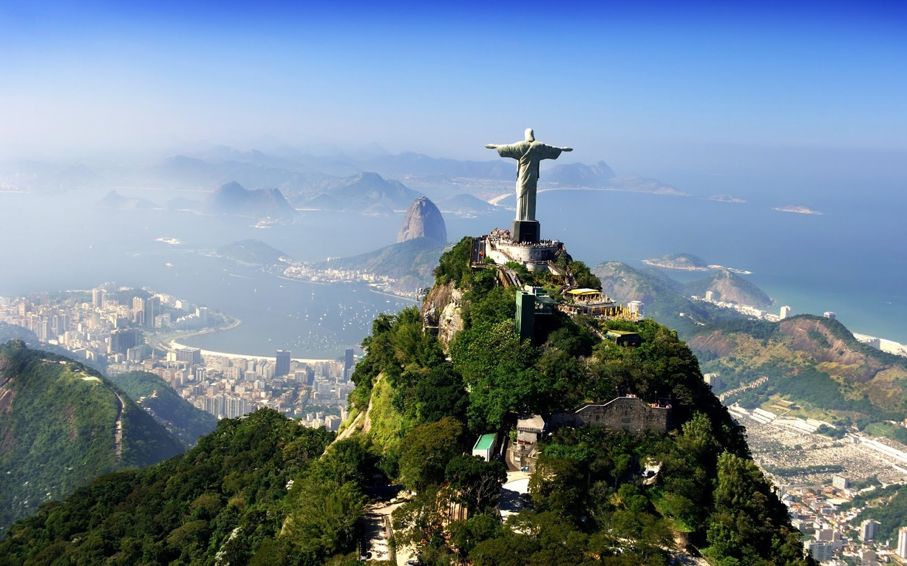
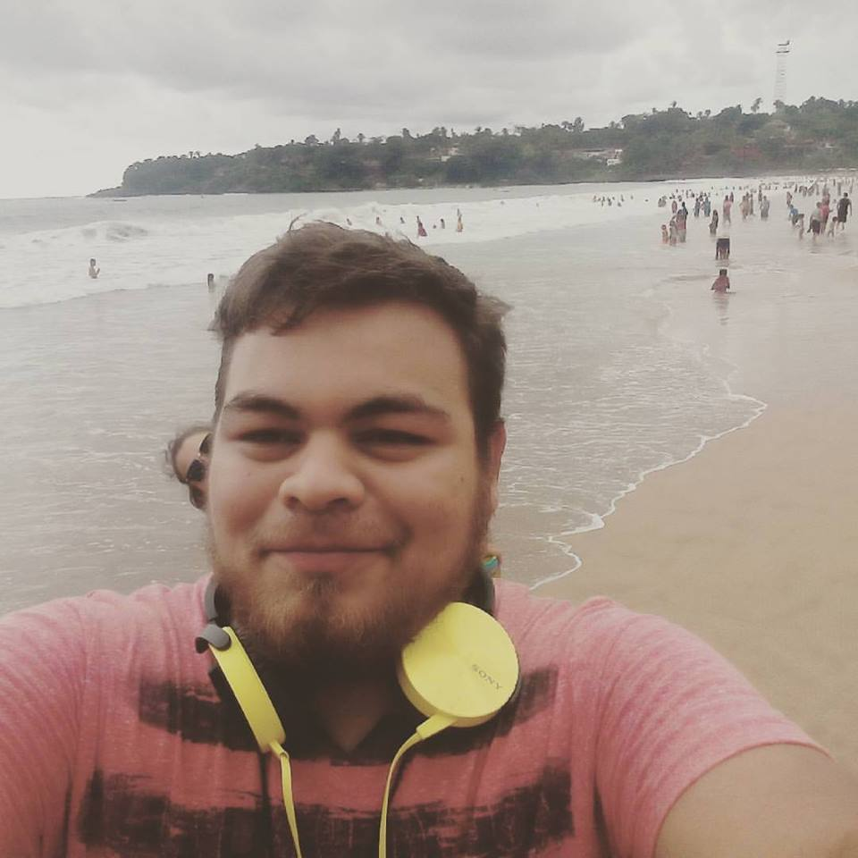
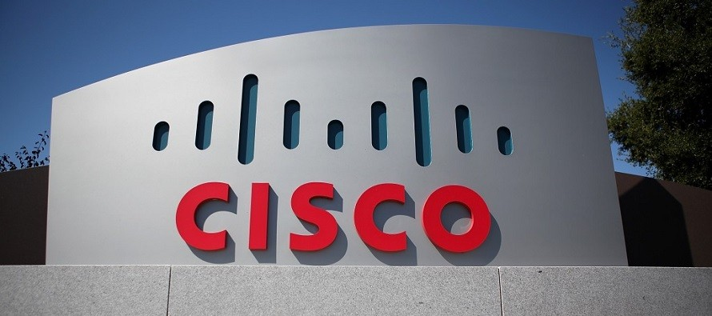

PLANES A FUTURO

Uno de mis principales planes a futuro es conocer Brasil, aprender mas sobre su cultura desde pequeño he tenido una gran fascinación sobre la gran republica federativa de Brasil, siempre he dicho que nunca me casare antes de conocer brasil. Quiero conocer sus hermosas playas, su cultura, pero lo mas interesante para mi es que en sao paulo se encuentra entre las ciudades mas felices del mundo, algo que me causa curiosidad saber como es, que tienen ellos probar su gastronomía y conocer a mi amigo anderson perfoll que tengo conociéndolo aproximadamente 2 años.

Pero lo principal ahorita es graduarme de la universidad, obtener mi titulo de ingeniero en informática, ese es mi plan a futuro mas importante en el momento, aprender y ser feliz por lo que tengo. Ir mejorando poco a poco en cada uno de mis aspectos, lograr ser mas responsable, aprender de todos mis errores y vivir el momento.

Otros de mis planes a futuro que tan tengo en mente es una vez me gradué, quiero irme de la ciudad de Los Mochis, quiero irme a trabajar a una ciudad grande saber que es la experiencia de vivir en una ciudad donde no conozcas a nadie, trabajar en lo que amo, pero un plan a futuro es algun dia poder trabajar en CISCO la industria de redes mas grande. Es un plan a futuro que espero realizar algún día.